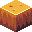
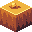
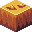
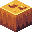
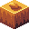
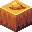

Crimson Horizons Wiki
Drill
Regolith is a fundamental resource that encompasses rocks, dust, and sand, making up a substantial 40% of
the game world. This versatile material serves as the bedrock for constructing buildings, roads, and
pathways, contributing to the development and expansion of your in-game universe.
Regolith is a prevalent geological material that can be found extensively throughout the game world,
encompassing approximately 40% of the terrain. This material consists of a mixture of rocks, dust, and
sand, making it a versatile and essential resource for various construction purposes within the game.
Regolith Image

Type: Small rocks, fine dust particles, and sand
Special Properties: Despite its seemingly unremarkable nature, boasts several special
properties that make it valuable for in-game applications.
Obtaining
Natural generation: Regolith naturally generates across the game world, covering an extensive
40% of the terrain. This means that players can typically find it by exploring the environment without the need
for extensive mining or excavation.
Breaking: Another efficient method of collecting Regolith is by employing specialized drills or
excavators. These powerful machines can make short work of
extracting Regolith from the ground, significantly
speeding up the resource collection process. Whether you're setting up a mining operation or constructing
large-scale infrastructure projects, using drills and excavators is the go-to choice for players looking to
gather Regolith swiftly and effectively.
Crafting: While Regolith itself cannot be crafted, it serves as a crucial ingredient in various
crafting recipes. Players can combine Regolith with other materials to create an array of structures and items.
Usage
Crafting ingredient: As a versatile resource, Regolith has a diverse range of applications in
the game:
Crafting Ingredient: Regolith serves as a fundamental ingredient in many crafting recipes. Players can use it in
conjunction with other materials to create buildings, roads, and pathways, enhancing their in-game environment
and infrastructure.
Data values
ID: ch:regolith
States:
| rock_amount |
0 |
0 |
No Rocks or Dust
|
1 |
 No Rocks or Dust
|
2 |
No Rocks or Dust
|
3 |
No Rocks or Dust
|
4 |
 No Rocks or Dust
|
5 |
 No Rocks or Dust
|
6 |
 No Rocks or Dust
|
7 |
 No Rocks or Dust
|
8 |
No Rocks or Dust
|
9 |
 No Rocks or Dust
|
Trivia
Regolith's porous quality ensures efficient drainage when used in construction, which can help mitigate
flooding
issues in the game. This material is often found in abundance near water bodies, as it tends to accumulate
in
areas with sediment deposits.
References
To optimize the use of Regolith in the game, players are encouraged to explore in-game tutorials and guides.
Additionally, the official game manual and community forums can provide valuable insights into the diverse
applications and benefits of Regolith as a construction and crafting resource.
For more information about other in-game elements, visit the Game Wiki
homepage.